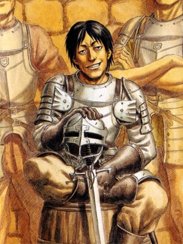

Nome: Corkus
Sexo: Masculino
Afiliação: Bando do Falcão
Ocupação: Mercenário
Aparência
Corkus é descrito como um homem de olhos castanhos nos seus trinta anos, de tamanho normal e magro. Ele tem o cabelo preto liso, que vem até a base do pescoço. Corkus veste uma camisa roxa lisa sob sua armadura cinza, juntamente com um par de calças marrom. Ele sempre lutou com uma espada curta, mas também foi visto com uma besta.